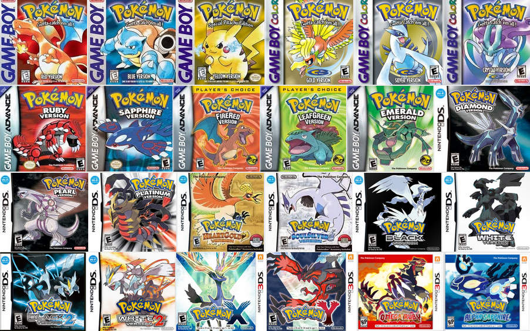

Pokémon is a media franchise managed by The Pokémon Company, a Japanese consortium between Nintendo, Game Freak, and Creatures. The franchise copyright is shared by all three companies, but Nintendo is the sole owner of the trademark. The franchise was created by Satoshi Tajiri in 1995 and is centered on fictional creatures called "Pokémon", which humans, known as Pokémon Trainers, catch and train to battle each other for sport.
